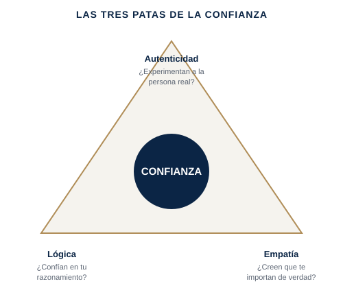

"Sé más confiable" no es un plan — es un deseo. La confianza se rompe de formas concretas y diagnosticables, y cada una necesita un arreglo distinto.
Un equipo nuevo que es educado pero todavía no es honesto contigo; una relación con un stakeholder que sobrevivió a un error pero nunca se recuperó del todo; un líder respetado pero no lo bastante confiable como para que le traigan malas noticias a tiempo.
Frances Frei, de Harvard Business School, y su colega Anne Morriss estudiaron por qué se rompe la confianza entre los líderes y las personas a su alrededor, y encontraron que casi siempre se reduce a una inestabilidad en una de tres patas: autenticidad (¿la gente experimenta a la persona real, o una actuación?), lógica (¿confían en la solidez de tu criterio y tu razonamiento?) y empatía (¿creen que estás genuinamente invertido en ellos, no solo en el resultado?). La mayoría de los líderes asumen que un problema de confianza es cuestión de simpatía o trayectoria, e intentan arreglarlo trabajando más duro o siendo más amables — pero si la inestabilidad real está en la lógica, por ejemplo, ninguna cantidad de calidez lo repara; hace falta ser más transparente con tu razonamiento. Diagnosticar qué pata está inestable, antes de intentar arreglarla, es lo que de verdad reconstruye la confianza más rápido.

Adaptación simplificada y con fines formativos del marco de confianza de Frances Frei y Anne Morriss.
Por qué "sé más confiable" no funciona → las tres patas de la confianza, y cómo diagnosticar cuál está realmente rota.
Vídeo extendido (15-25 min), un PDF framework/checklist propio, un workbook de aplicación práctica, y un resumen curado de Unleashed de Frances Frei y Anne Morriss, y La Velocidad de la Confianza de Stephen M.R. Covey.
Gratuito si eres cliente de coaching activo · El acceso por suscripción para el público general se abrirá próximamente.